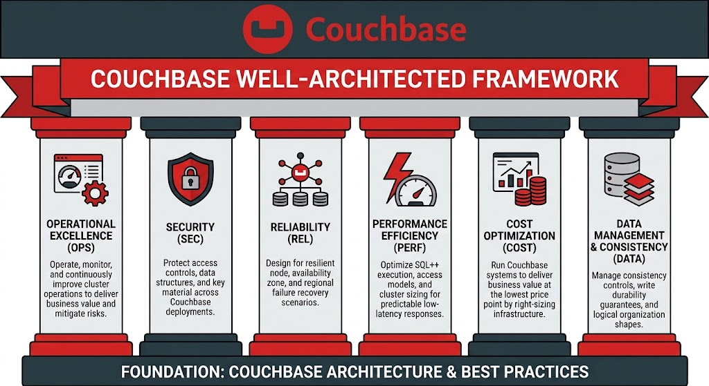

The Couchbase Well-Architected Framework

Six pillars describe what a well-run Couchbase workload looks like. Together they cover how it is operated, protected, kept available, kept fast, paid for, and kept correct.
- Operational Excellence
- Monitoring, rebalances, upgrades, configuration as code, runbooks, SDK lifecycle, and readiness to work with Support.
- Security
- Role-based access, audit, network exposure, encryption, credentials, secure SQL++, and TLS certificates.
- Reliability
- Replicas and server groups, auto-failover, backups and disaster recovery, disk and capacity headroom, and how the application handles timeouts and retries.
- Performance Efficiency
- Key-Value first access, document design, covering indexes, prepared statements, service sizing, and storage engine choice.
- Cost Optimization
- Cost visibility, access-pattern review before adding nodes, right-sizing, index and storage hygiene, and idle environments.
- Data Management and Consistency
- Durability, CAS, scopes and collections, expiry, scan consistency, transactions, and XDCR conflict resolution.
Couchbase Mobile and vector search are outside the scope of this assessment.
The assessment tool
This tool turns the six pillars into a conversation about one workload. For each practice, your team answers one question: do we do this today? The result is a prioritized list of what is solid, what is exposed, and what to do next, aligned with Couchbase documentation.
What you get
- Prioritized recommendations, rated high, medium, or low, each with a concrete next step.
- A baseline to run again after changes, or before a migration or major release.
- A report you can share, written for the customer, saved in the wiki page.
Questions adapt to where Couchbase runs: Capella, self-managed Server, or the Autonomous Operator. Nothing connects to your cluster. The wiki page keeps your answers, so you can open the assessment again from the editor and change it.
How to use it
Do these three steps in order. Your answers stay in this window until you click Save to Wiki. If you click Close before you save, you lose them.
Step 1. Open Assessment and fill in the names
- Click the Assessment tab at the top.
- In Customer name, type who the review is for. Example: Acme Retail.
- In Reviewer name, type your name.
- In Workload, type the application you are reviewing. Example: Orders API.
- Under Type, choose one option:
- Capella if Couchbase hosts the cluster.
- Self-managed Server if you run the machines.
- Autonomous Operator if Couchbase runs on Kubernetes.
The page keeps this as you type. Questions that do not fit the type you chose are hidden.
Step 2. Tick what you already do
- On the left, click a pillar. A good place to start is Operational Excellence.
- Read the question.
- Look at Audience. It says who should answer: Platform, Application, or Security.
- Tick a box if you already do that thing.
- Leave a box empty if you do not do it. The report will list it as something to fix. A question with nothing ticked is treated as not answered and is not scored; tick None of these if you do none of them.
- If a box says Only if this applies, leave it empty when you do not use that feature. That empty box is not a problem.
- Use Notes when you want to explain a choice. Example: We have one site only.
- Click the next pillar on the left and do the same. You can skip one and come back.
Step 3. Get the report
- Click Submit Review.
- Read the summary. It shows how many questions you answered, and how many gaps are high, medium, and low.
- Click Save to Wiki. The report goes into the wiki page at the cursor.
- Save the wiki page.
To change the assessment later, open the page in the editor and click Edit Well-Architected Assessment Tool.
To review a different application, click Start New Review. That clears the answers in this window. It does not change your Couchbase cluster.